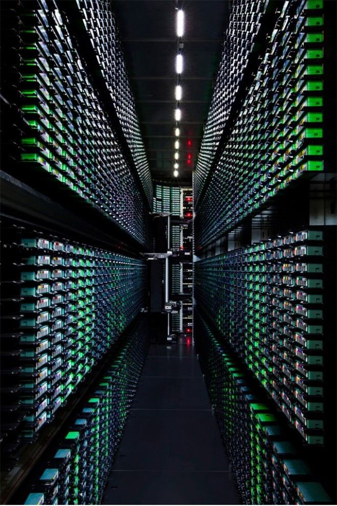

The known (water and electricity usage)
The public is in part aware that data centres use water and electricity, and that they bring noise and traffic.
CDC stands at 17 Roberts Road, on the corner of Capicure Drive. Six data centres. Four are finished. Two are still being built. The site sits well for transport, in a suburb where 45% of the land is zoned general industrial.
Decisions about these centres are made by government and large corporations. The community is barely consulted. Most residents do not know the buildings are data centres, or that they are here at all. People who do know them have little trust in the operators, and they fear expansion with nobody accountable. Jobs are the other worry. Once a centre is running, it does not need many staff.
There is little public account of what these centres take — power, water, noise — or what that draw does to the people living nearby. From the street you meet a fence and a keep-out sign. The resource use stays inside.


The community is outside the decision, and outside the information.
Eastern Creek is not one building. In Assessment 1 we mapped a precinct: centres, substations, and the grids that feed them. CDC is the campus we stood in front of.


Six centres on this campus, at the corner of Capicure Drive. Four are built. Two are still going up. The other notes are the wider infrastructure plotted in Assessment 1.
Eastern Creek has not been shown the centres already here. Australia gains hosting and new uses from the same growth. What opens for smaller companies is faster work, and that opening is not a jobs boom. The challenge, the tension, and the opportunity are one story.
The core challenge sits between educating and informing the Eastern Creek community of these digital expansions, as both the local council need to intentionally involve members, and members themselves need to seek this out and willingly participate.

The public is in part aware that data centres use water and electricity, and that they bring noise and traffic.
“Because honestly until recently I wouldn't even have known which one was a data centre and which one was just a warehouse.” — Anonymous
How can we expect members to participate and know the local consequences, if they aren't even informed of the ones down the road?
These expansions deepen day-to-day work. Much faster turnarounds, deeper skill developments, deeper research. This is particularly great for founders, and small startups.

This is not to be confused with increased job opportunities. There will be jobs momentarily in the construction of them, but time has shown their maintenance require little operators.

A deeper day-to-day reliance means deeper work, more research, and quicker turnaround. That matters for startup founders and smaller companies.

Nationally, Eastern Creek’s expansion helps Australia host its own technology, and widens what that technology can be used for.

Building a centre hires people for a while. Running one does not. Few roles are needed to maintain it. Do not confuse the opportunity with employment.

The tools and skills that come with this, including artificial intelligence, may slowly replace real-person roles and shrink the workforce inside large corporations.
National improvements arrive at local costs.
The community is outside the decision. These three levers are how they get back in.
A digital future that belongs to the people who live with it. Residents know the good and the bad of data centre growth, and they have a way to shape what happens next — in the languages they speak, in the places they already gather, with evidence they can actually use.
Every search, every stream, every photo saved to the cloud exists somewhere. More and more of it is in Eastern Creek. Few people know what a data centre uses, or how to say where the next one should be built.
This campaign closes that gap. Residents learn the good and the bad, and they leave able to choose.


Libraries, community centres, and local schools. Run in the community’s main languages, with sessions for young people, older people, and local businesses. In collaboration with Aboriginal and Torres Strait Islander and cultural organisations, so the work holds its integrity.
Plain English in place of jargon. Infographics, short videos, and maps on the Council website, social media, and newsletters. The numbers are real: energy, water, noise, and jobs, from CDC, Sydney Water, and Endeavour Energy.
An independent facilitator keeps it neutral, so this is not the operator talking about itself. The large approvals stay with the State. It goes live in 6 to 12 months, and it is measured, so we know whether it worked.
We do not ask people if they support data centres. We ask what they want this place to look like in 2050, then test growth against that. We know it works. We already did it in an interview.

2050, in her words: safe, green, affordable, with less traffic. She could not tell a data centre from a warehouse. She could judge one once she had a future to set it against.
Residents describe the place they want, before anyone asks them to approve a building.
Council holds that description still, and tests every growth scenario against it.
What leaves the room is a community position statement.
Asked what more centres would mean, she said more traffic, more construction, more trucks. The workshop does not argue with that. It writes it down and makes Council answer it.
Name the cost in the resident’s own words. Traffic. Construction. Trucks.
Each growth scenario is scored against the future the room already described.
A proposal that fails that future does not get a free pass.
“Depends where they build them.” Losing trees would be bad. If the land is already industrial, she said, it may matter less. The place and the building are not the same question.
Separate the building from the ground it stands on.
Industrial land is weighed differently from trees, homes, and streets.
The position statement says where growth can go, and where it cannot.
Residents. Council convenes them. The proof we already have is one interview. The workshop is that conversation, held with the whole suburb.
People describe 2050. Council tests growth against what they say, and feeds it into planning submissions. It only works if the transparency lever supplies the data.
A community position statement. Not a yes or a no. A future the next proposal has to face.
Residents need information they can use. Some of it is already public. Council’s job is to gather it and say it in plain language, including translated and printed summaries.

 REDACTED — HOVER TO DISCLOSE
REDACTED — HOVER TO DISCLOSE
Quarterly reports on electricity, water, noise, and environmental promises. Each one shows what the operator promised, what actually happened, and how community concerns were answered.
Start with a pilot. One willing operator and Blacktown City Council, six months, two quarterly reports, one shared template. The operator supplies the data and helps fund the monitoring. Council makes the reports easy to find. An independent expert checks the figures.
The reports are what the workshops compare futures with, and what the education campaign teaches from. Personal information stays out. So does anything that would compromise security.
A rule that makes this mandatory needs legal review and the NSW planning authority. It is working if the reports arrive on time, residents can understand them, and a concern gets a clear answer. The hard part is staff time, and an operator willing to go first.
I used to think publishing information was enough. People also need help understanding it. Jerry

Residents learn the good and the bad in the places they already gather, and leave able to choose.
Council tests growth against a future residents have described, and writes it into a position statement.
Quarterly reports, in plain language, supply the evidence the other two levers run on.
Education tells people the machine is here. Workshops turn that knowledge into a position. Transparency is the evidence both of them need. Take one away and the other two stall. An inclusive future starts with knowing what is in your own backyard.
Put the three questions to the room. They are the same questions the research asked the suburb.